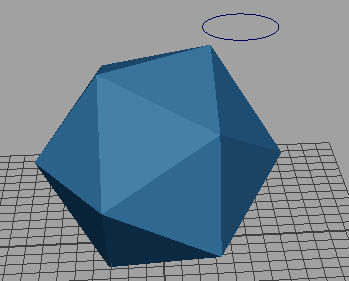
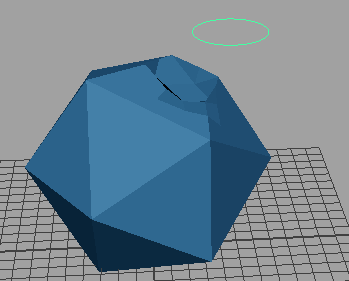
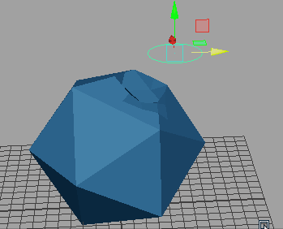
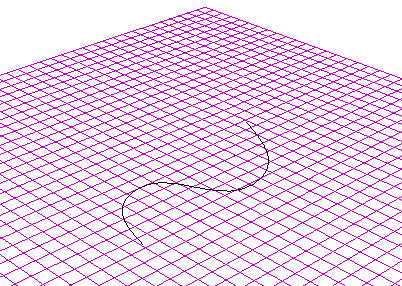
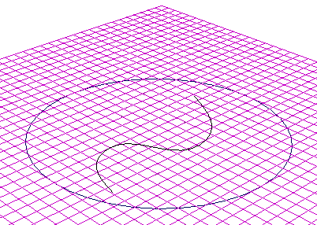
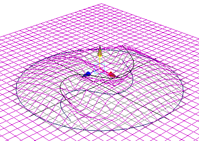
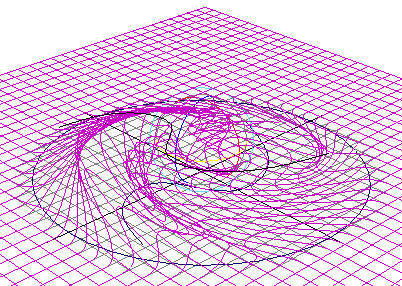

若要创建线变形器，可以使用“线条工具”(Wire Tool)。所创建的线变形器的特性取决于“线条工具”(Wire Tool)的工具设置。默认情况下，会将“线条工具”(Wire Tool)设定为创建不包含限制曲线的线变形器。
创建线条变形器
- 确保场景中有要变形的几何体和要用作线条的曲线。（在此示例中，使用了“多边形建模”(Poly Modeling)工具架中的标准多边形柏拉图多面体形状和“曲线”(Curves)工具架中的 NURBS 圆形。）

多边形柏拉图多面体形状和 NURBS 圆形
将曲线定位到所需位置；线条变形器处于活动状态后，将无法轻松重新定位曲线。
注： 您可以使用手绘曲线，但它必须是闭合曲线。 - 选择“变形 > (创建)线条”(Deform > (Create) Wire) >
 。此时将显示线条工具(Wire Tool)选项窗口。
。此时将显示线条工具(Wire Tool)选项窗口。
- 在“线条工具”(Wire Tool)选项窗口打开的情况下，选择要变形的几何体，然后按 Enter 键。（在此示例中，选择多边形柏拉图多面体形状。）
- 接下来，选择要用作线条变形器的曲线，然后按 Enter 键。（在此示例中，选择 NURBS 圆形。）

圆形“线条”在几何体上产生影响
- 在“属性编辑器”(Attribute Editor)(Ctrl + A)中，选择“wire1”选项卡。将“缩放”(Scale)和“衰减”(Dropoff)距离设置为所需的量。（在此示例中，这两个设置均设置为 3.0）。

结果：使用圆形影响对象的形状
- 平移、旋转和缩放圆形“线条”以使几何体变形。
指定线条工具设置
- 选择“变形 > (创建)线条”(Deform > (Create) Wire) > 。
此时将显示线条工具(Wire Tool)选项窗口。
- 设置工具选项。
创建不带限制曲线的线变形器
- 将“线条工具”(Wire Tool)的“限制曲线”(Holders)设置设定为禁用（默认为禁用）。
- 创建要用作影响线的曲线。为获得最佳效果，请将它们放置在可变形对象上或可变形对象附近。
- 选择“变形 > (创建)线条”(Deform > (Create) Wire) > 。此时将显示线条工具(Wire Tool)选项窗口。
光标将变为十字线图标，并且“线条工具”(Wire Tool)图标将显示在“工具箱”(Tool Box)中。现在即可使用“线条工具”(Wire Tool)，基于“线条工具”(Wire Tool)的当前工具设置创建线变形器。
“帮助行”会显示信息，以引导您完成创建线变形器的过程。
- 选择要变形的对象，然后按 Enter 键（Linux 和 Windows）或 Return 键 (Mac OS X)。
- 选择要用作影响线的所有曲线。
如果仅对象的曲面上的曲线是要用作影响线的曲线，请在对象上的所有曲线上拖动光标。“线条工具”(Wire Tool)会自动仅选择曲线。
- 按 Enter 键或 Return 键。
会基于“线条工具”(Wire Tool)的设置创建一个线变形器。选定曲线现在是可用于变形选定对象的影响线。
会为每条影响线创建基础线。会在“大纲视图”(Outliner)中列出基础线。默认情况下，在场景中不会显示基础线，但基础线确实会影响变形效果。线节点会基于每条影响线与其基础线之间的差异来计算变形效果。
已创建变形器集。变形器集包括可能会受线变形器影响的所有可变形对象的点。
有关创建和编辑变形效果的详细信息，请参见编辑线变形效果。
创建变形效果
- 移动、旋转或缩放影响线。
- 编辑线变形器的通道。
创建带有限制曲线的线变形器
- 将“线条工具”(Wire Tool)的“限制曲线”(Holders)设置设定为启用（默认为禁用）。
- 在可变形对象上或其附近，创建要用作影响线的曲线。
- 在可变形对象上或其附近，创建要用作限制曲线的曲线。
- 选择以打开线条工具(Wire Tool)。
光标将变为十字线，并且“线条工具”(Wire Tool)图标将显示在“工具箱”(Tool Box)中。现在即可使用“线条工具”(Wire Tool)，基于“线条工具”(Wire Tool)的当前工具设置创建线变形器。
请注意，“帮助行”会显示信息，以引导您完成创建线变形器的过程。
- 选择要变形的对象，然后按 Enter 键（Linux 和 Windows）或 Return 键 (Mac OS X)。
- 选择要用作影响线的曲线，然后按 Enter 键或 Return 键。
- 选择一条限制曲线，然后按 Enter 键或 Return 键。一条影响线仅可以有一条限制曲线。
- 通过选择空的空间清除选择列表，然后按 Enter 键或 Return 键。
注： 可以将一条限制曲线指定给多条影响线。若要执行该操作，请拾取一条将成为影响线的曲线，按 Enter 键或 Return 键，然后选择将成为限制曲线的曲线，再次按 Enter 键或 Return 键。拾取下一条将成为影响线的曲线，按 Enter 键或 Return 键，然后选择相同的限制曲线，再次按 Enter 键或 Return 键。对于将指定限制曲线的每条影响线曲线，继续该过程。
- 准备好创建线变形器后，请通过选择空的空间清除选择列表，然后按 Enter 键或 Return 键。
会基于“线条工具”(Wire Tool)的工具设置创建一个线变形器。选定曲线现在是可用于变形选定对象的影响线。
会为每条影响线创建基础线。会在“大纲视图”(Outliner)中列出基础线。默认情况下，在场景中不会显示基础线，但基础线确实会影响变形效果。线节点会基于每条影响线与其基础线之间的差异来计算变形效果。
已创建变形器集。变形器集包括可能会受线变形器影响的所有可变形对象的点。
创建变形效果
- 移动、旋转或缩放影响线。
- 编辑线变形器的通道。
有关创建和编辑变形效果的详细信息，请参见下一节，编辑线变形效果。
添加影响线
- 选择要添加到变形器的曲线。
- 按 Shift 键并单击变形器中的任何线，可选择要将曲线作为影响线添加到其中的变形器。
- 选择“变形 > (编辑)线 > 添加”(Deform > (Edit) Wire > Add) > 。请参见线添加选项。
选定曲线将变成线变形器的影响线。
移除影响线
- 选择要作为影响线移除的曲线。
- 选择“变形 > (编辑)线 > 移除”(Deform > (Edit) Wire > Remove) > 。请参见线移除选项。
选定曲线将不再是影响线。
重置影响线
- 选择要重置的影响线。
- 选择“变形 > (编辑)线 > 重置”(Deform > (Edit) Wire > Reset) > 。请参见线重置选项。
显示基础线
- 选择影响线。
- 选择。
创建线组
- 选择影响线。
- 选择“变形 > (编辑)线 > 父基础线”(Deform > (Edit) Wire > Parent Base Wire) > 。请参见线父基础线选项。
会创建一个线组，其中包含影响线和基础线。会在命名影响线之后命名线组，并会在“大纲视图”(Outliner)中列出该线组。
线变形器快速入门
本节介绍如何尽可能快地创建典型的线变形器。
在此示例中，将使用 S 形曲线变形曲面，并用圆形限制变形区域。
示例：创建 NURBS 平面
- 创建一个“宽度”(Width)为 40、“长度”(Length)为 40、“U 向面片数”(Patches U)为 40、“V 向面片数”(Patches V)为 40、且包含“曲面次数立方”(Surface Degree Cubic)的 NURBS 平面。
- 为影响线创建曲线。使用“CV 曲线工具”(CV Curve Tool)或“EP 曲线工具”(EP Curve Tool)，在平面的中心区域绘制一条 S 形曲线。

- 为限制变形区域创建一个圆形。对于此示例，圆形将包围平面上的 S 形曲线。

将使用圆形来限制变形区域。限制变形区域的曲线称为限制曲线。
- 请通过执行下列操作创建线变形器：
- 选择“变形 > (创建)线条”(Deform > (Create) Wire) > 。这将打开线条工具(Wire Tool)选项面板。
- 在“工具设置”(Tool Settings)窗口中，启用“限制曲线”(Holders)（默认为禁用）。
- 关闭“工具设置”(Tool Settings)窗口。
请注意，在工作区中，光标现在呈十字形，指示正在使用“线工具”(Wire Tool)。
请确保严格按照以下顺序执行接下来的四个步骤。
- 选择平面，然后按 Enter 键（Linux 和 Windows）或 Return 键 (Mac OS X)。
- 选择 S 形曲线，然后按 Enter 键或 Return 键。
- 选择圆形，然后按 Enter 键或 Return 键。
- 最后，在工作区中不选择任何项目，然后按 Enter 键或 Return 键。
不选择任何项目会告知 Maya 您已完成限制曲线的选择，并告知 Maya 要创建线变形器。
Maya 现在会创建线变形器。现在可以操纵 S 形曲线来创建变形效果。请注意，仅圆形内的区域可能会受到影响。
- 选择“变形 > (创建)线条”(Deform > (Create) Wire) >
- 请通过执行下列操作创建变形：
- 选择 S 形曲线。
- 向上移动 S 形曲线。
- 旋转 S 形曲线，以获得漩涡“轮”的变形效果。

平面会向上变形，就好像被吸引到 S 形曲线一样。
线变形器会使用 S 形曲线来影响变形的形状，因此将该曲线称为影响线。同时，因为圆形限制变形区域，所以将该圆形称为限制曲线。
